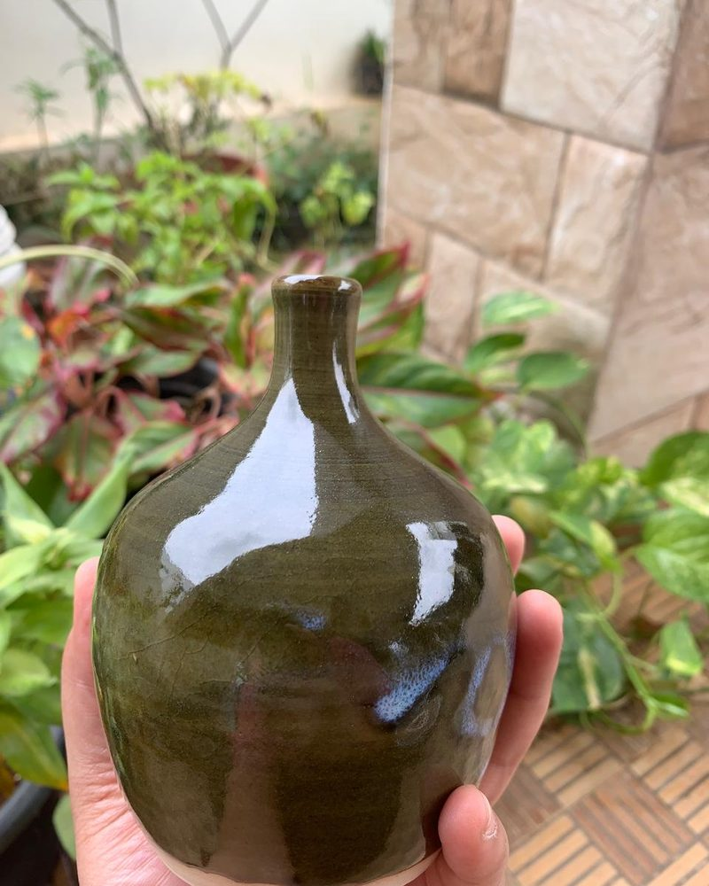
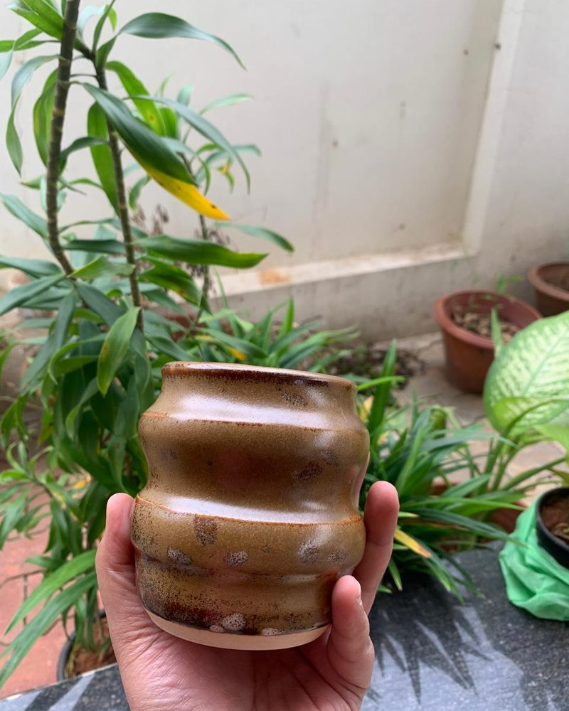
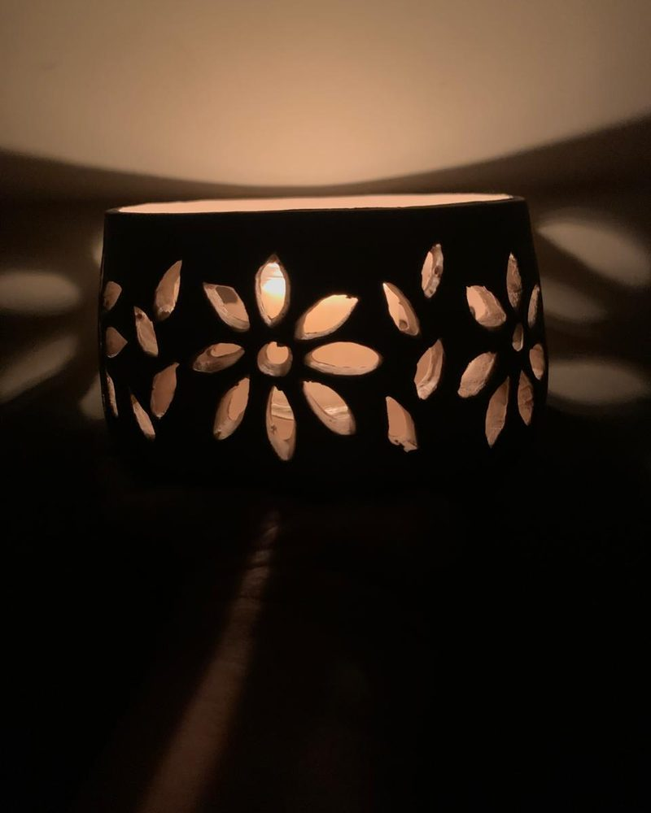
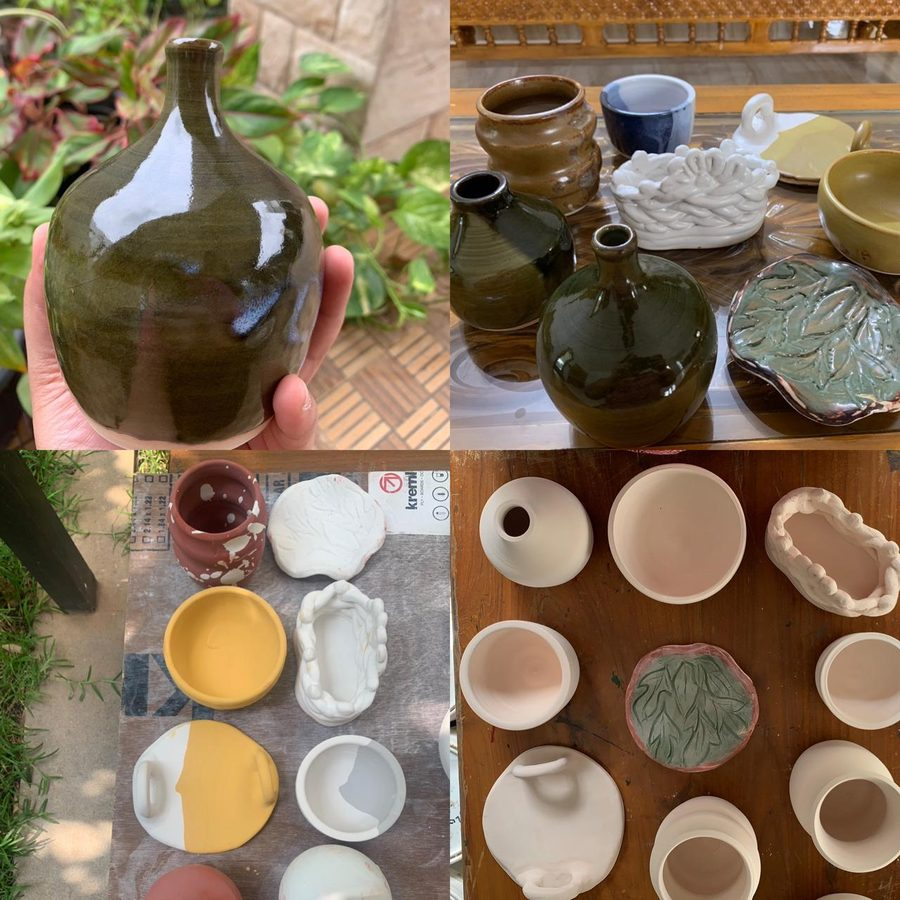
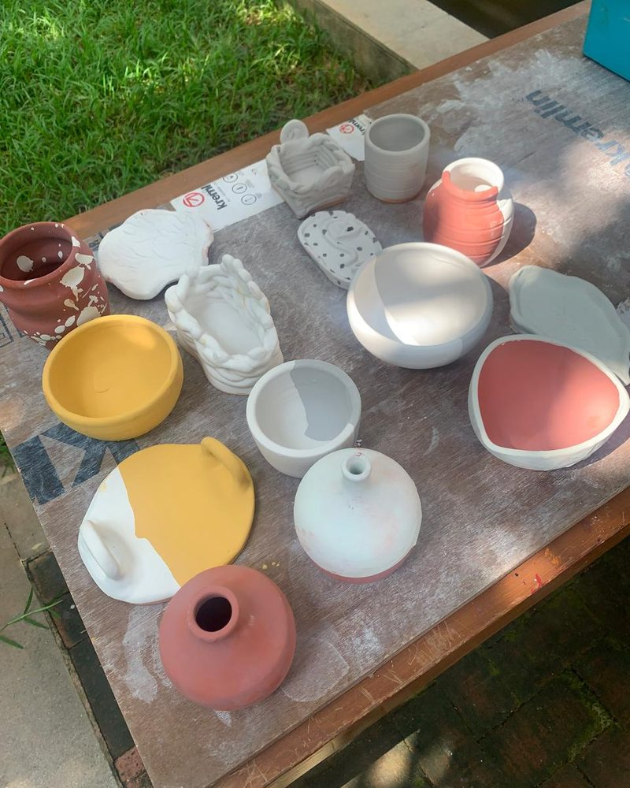
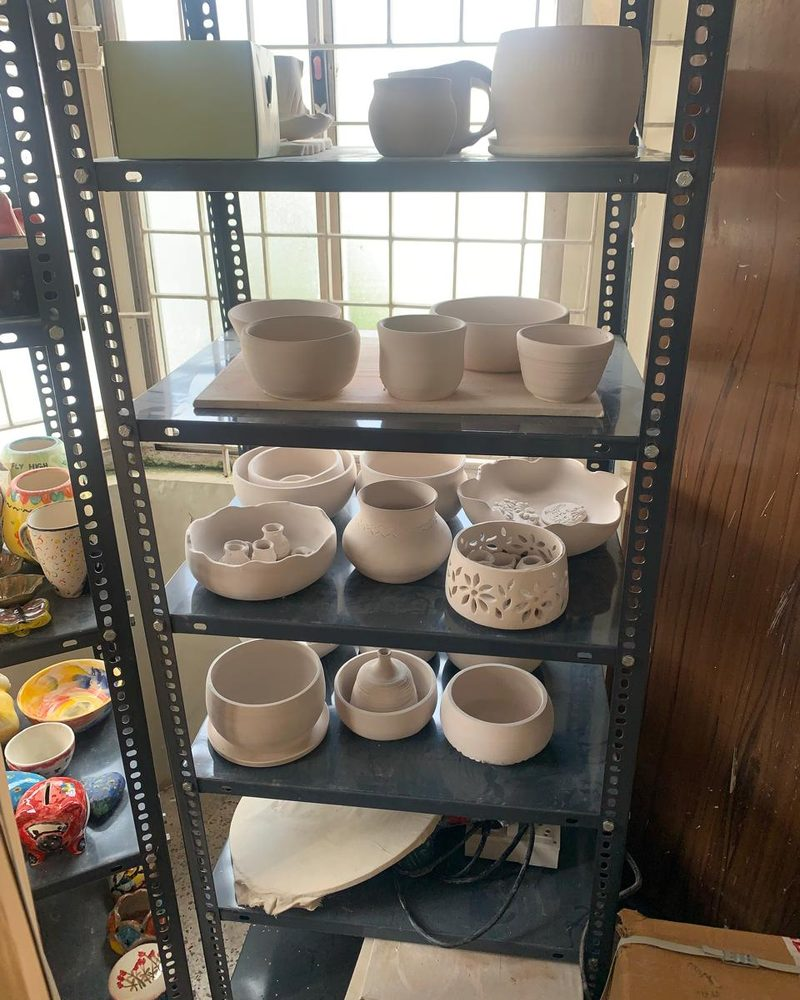

I'm Manimegalai Mamallan, a full-stack software engineer with 6+ years designing and operating production systems, from a platform sustaining 5M+ daily API calls to MCP-based agentic layers that let non-technical users query live data in natural language. I build the backend, and the intelligence on top of it.
At Ashok Leyland I spent 6+ years architecting high-availability platforms and leading a team of five. I independently architected and launched a customer application that scaled to 500K+ users, 300K daily actives and 5M+ daily API calls, earning 3× National Customer Experience Excellence awards.
Then, finishing my M.S. in Data Science at the University at Buffalo and researching ML at Machinery Monitoring Services, I fused the two: I built a real-time predictive-monitoring platform full-stack — a Python inference pipeline behind a live React dashboard, containerized with Docker on AWS — then layered an agentic AI interface with MCP and LLMs on top, so non-technical users could query complex live sensor data conversationally. The kind of solid backend I've always built, now with intelligence on top.
I enjoy building systems that work under load, whether it's a REST API serving millions or a model that has to beat a real baseline. Right now I'm at the University at Buffalo building a full-stack application that replaces manual lab workflows for faculty researchers. I'm interested in the version that ships and holds up.
Engineering and ML work, each shaped end to end, with the stack I learned along the way and a result I can stand behind.
Delivered natural-language access to accident-severity predictions (F1 up to 0.896) by building a distributed PySpark pipeline that joins 7M+ accident records with 8M+ weather and hospital records through temporal-window and geospatial joins, with schema alignment and join optimization feeding Spark ML severity models. The trained PipelineModels are served through a custom MCP layer to Claude Desktop for real-time, natural-language inference, so end users need no Spark.
View project & repo →Turned 40K+ nested CVE v5 JSON records into governed, queryable analytics by building a Medallion (Bronze/Silver/Gold) lakehouse on Databricks and Delta Lake, using schema-on-read PySpark ingestion, recursive JSON normalization and validation gates between layers. Optimized Gold-layer SQL surfaces zero-day latency patterns and high-risk vendor concentrations for self-service stakeholder reporting.
View project & repo →Modeled customers, sellers, orders, payments, reviews and geolocation in a normalized PostgreSQL schema, then tuned join and window-function analytics through EXPLAIN-driven indexing and query restructuring to surface top revenue products and customer spending patterns. Shipped as a containerized Docker / Streamlit app for custom SQL exploration.
View project & repo →Detected industrial machinery faults and predicted severity at 99% accuracy by training deep-learning models (1D CNN) on FFT-transformed triaxial accelerometer data, behind a real-time acquisition pipeline built on threaded serial comms, hex-stream parsing and waveform reconstruction. Architected a plugin-based model registry behind a unified inference API contract so models swap in production without caller changes, and added an MCP + LLM layer for natural-language fault queries over live data.
Industry project · private repoRaised the appropriate-therapy rate to 94.52% (+6.45% over the physician baseline) with a two-stage pipeline on 80K patient records: LASSO / stepwise-AIC feature selection, then per-patient resistance prediction with logistic regression, kNN, random forest and gradient-boosted trees, then patient-similarity modeling with Youden's-J dynamic thresholds to select the lowest-resistance antibiotic.
View project & repo →Open to Software Engineer and AI-integration roles in the U.S. Tell me what you're building, or just say hello.
Outside of engineering, I throw and hand-build ceramics. It's the same discipline as good software: start with raw material, center it, and finish something durable. The patience and precision carry straight back to the work.





